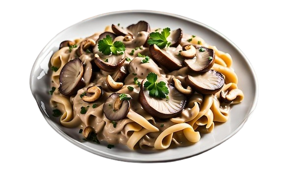

Back

Mushroom Stroganoff with Cashew Cream
A creamy, dairy-free twist on the classic stroganoff using mushrooms and cashew cream.
Ingredients
1 cup raw cashews, soaked in hot water for 1 hour
1 cup water (for cashew cream)
1 tablespoon olive oil
1 onion, diced
2 cloves garlic, minced
2 cups mushrooms, sliced
1 tablespoon soy sauce
1 teaspoon smoked paprika
Salt and pepper, to taste
Fresh parsley, chopped (for garnish)
Cooked pasta or rice, for serving
Instructions
Drain and rinse the cashews. Blend them with 1 cup of water until smooth to create cashew cream. Set aside.
In a large skillet, heat olive oil over medium heat. Sauté the onion and garlic until translucent.
Add the mushrooms and cook until they release their juices and start to brown.
Stir in the soy sauce, smoked paprika, salt, and pepper.
Pour in the cashew cream and simmer for 5 minutes, until thickened.
Serve over pasta or rice, garnished with fresh parsley